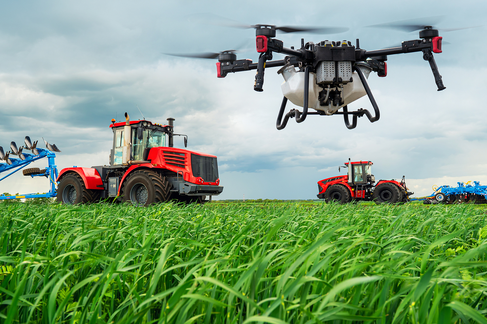
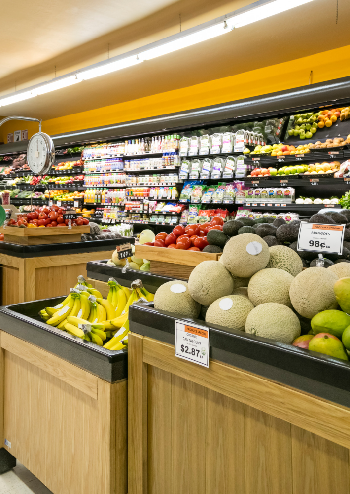

平台驱动种植服务
土地超市
本版块提供闲置耕地资源流转服务，农户可将闲置土地上架到土地超市，发布农田的基本信息以及期望租金等，土地的需求方根据自身需求挑选合适的土地资源，双方达成合作意向后，平台客服将引导辅助双方签订合同，进行相关部门备案等。通过此板块进一步盘活闲置的耕地资源，促进农户增收，也大大降低了企业的交易成本。同时，对于农户和村集体来说，土地的连片规划不仅盘活了集体资产，更提高了土地的价值。
农资直购
本版块提供农资产品销售服务。平台邀请农资销售商家入驻平台，上架售卖种子、农药、化肥等农资产品，扩大农资经销商售卖渠道，同时满足农户对农资产品多样化的需求。消费者可直接访问平台的农资购板块挑选并下单农资产品，解决农资产品种类单一和购买渠道有限的问题。

农机云享
本板块提供农机共享服务。邀请农机供应商及拥有者在本版块发布农机基本信息及共享价格，农户可浏览板块信息选择所需农机进行租赁。服务结束后农户可对农机进行评价，为其他农户提供农机选择的建议，平台强制下架好评率低于90%的农机，确保本平台始终为农户提供优质的农机使用服务。

农品集销
本板块提供农产品集中销售服务。争取农产品加工商、商超、社区团购等农产品收购者入驻平台，在种植前农户可根据产品收购商发布的信息，提前签订种植协议规定农产品种类和收购价格。在收获后，农户可在本板块发布售卖信息，吸引农产品收购者大批采买，降低销售压力。此外，公司与专业的农业保险机构合作，为农户提供农业保险服务，使农户在遭受自然灾害或病虫害时能够获得经济补偿，保障其基本收入，增强其抗风险能力。
农技讲堂
本板块提供农业知识传播服务，分为农业知识、植保动态、种植方案、农业专家四部分。在农业知识部分，打造“PLANTER”农业知识IP，在平台发布体系农业知识科普;在植保动态部分，定期发布最新的病虫害防治信息、植保技术动态、农药使用规范等内容;在种植方案部分，根据农户需要，利用大数据+人工智能自动生成种植方案。在农业专家部分，平台邀请专家及种地能手在农闲时开启系列直播科普讲座，定期发布经典、高产案例供农户参考、学习，并在评论区解答农民疑问，为农户排忧解难。